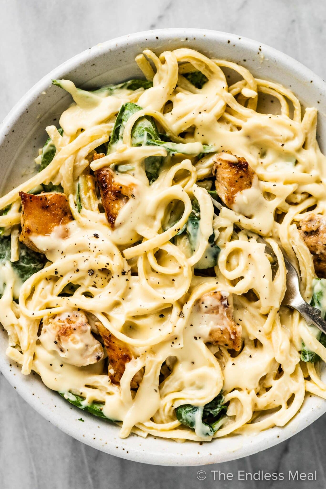

Alfredo

Description
A creamy and delicious Italian American classic.
Ingredients
24 ounces dry fettuccini pasta
1 cup butter
¾ pint heavy cream
salt and pepper to taste
1 dash garlic salt
¾ cup grated Romano cheese
½ cup grated Parmesan cheese
Directions
Step 1
Bring a large pot of lightly salted water to a boil. Add fettuccini and cook for 8 to 10 minutes or until al dente; drain.
Step 2
In a large saucepan, melt butter into cream over low heat. Add salt, pepper and garlic salt. Stir in cheese over medium heat until melted; this will thicken the sauce.
Step 3
Add pasta to sauce. Use enough of the pasta so that all of the sauce is used and the pasta is thoroughly coated. Serve immediately.